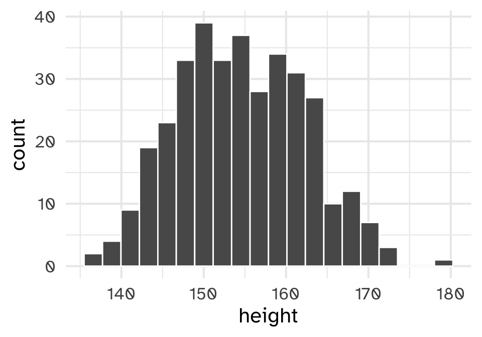
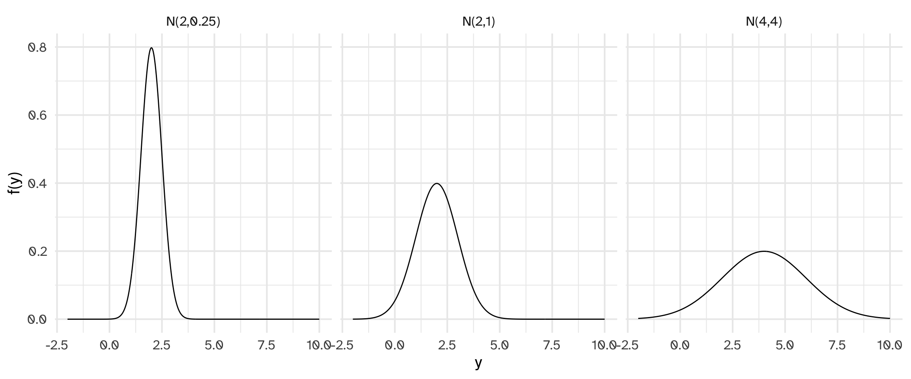
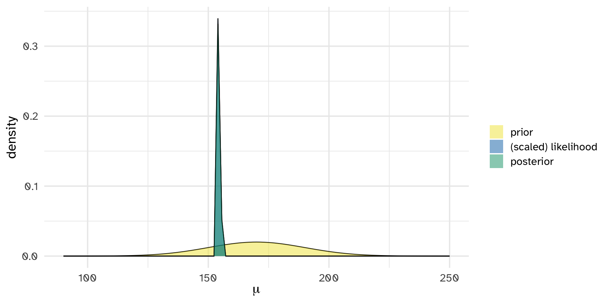
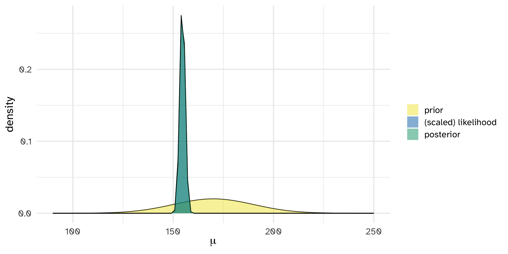
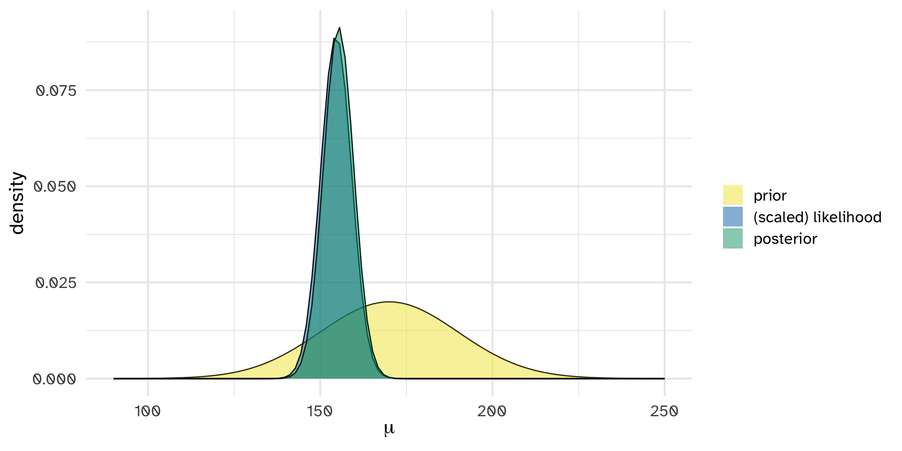

Normal-Normal model
Day 07
Prof Amanda Luby
Carleton College
Recap
Start with a reasonable likelihood for the data
A conjugate prior for a given likelihood is a prior model that results in a posterior with the same shape, but different parameters
The beta distribution is a conjugate prior for the binomial likelihood
The gamma distribution is a conjugate prior for the poisson likelihood
Beta-Binomial Bayesian Model
\[\pi \sim \text{Beta}(\alpha, \beta)\] \[ Y | \pi \sim \text{Binomial}(n, \pi)\] \[ \pi |Y \sim \text{Beta}(\alpha + y, \beta + n - y)\]
Gamma-Poisson Bayesian Model
\[\lambda \sim \text{Gamma}(s, r)\] \[ Y_i | \lambda \sim \text{Poisson}(\lambda)\]
\[\lambda | Y_1, Y_2, ..., Y_n \sim \text{Gamma}(s + \sum Y_i, r + n)\]
Data
Data on heights (in cm) of 352 adults

Normal Model
Let \(Y\) be a random variable which can take any value \(Y \in (-\infty,\infty)\) and is unimodal and symmetric. Then \(Y\) might be well represented by a Normal model with mean parameter \(\mu \in (-\infty, \infty)\) and standard deviation parameter \(\sigma > 0\) :
\[Y \sim N(\mu, \sigma^2)\]
The Normal model is specified by continuous pdf
\[\begin{equation}
f(y) = \frac{1}{\sqrt{2\pi\sigma^2}} \exp\bigg[{-\frac{(y-\mu)^2}{2\sigma^2}}\bigg] \;\; \text{ for } y \in (-\infty,\infty)
\end{equation}\]
\(E(Y) = \mu, \text{Mode}(Y) = \mu, \text{Var}(Y) = \sigma^2\)

Terminology
Normal: “usual” or “customary”
Statisticians historically called it “normal” because it was the “usual” distribution for, e.g., the CLT
Gaussian: name the distribution for the person who developed it
Also not quite right, since DeMoivre first proved the CLT
Both terms describe the same mathematical function
Normal-Normal Bayesian Model
Let $$ be an unknown mean parameter and \((Y_1,Y_2,\ldots,Y_n)\) be an independent \(N(\mu,\sigma^2)\) sample where \(\sigma\) is assumed to be known .
\[\mu \sim N(\theta, \tau^2)\] \[Y_i | \mu \stackrel{iid}{\sim} N(\mu, \sigma^2)\] \[\mu|\vec{y} \; \sim \; N\bigg(\frac{\theta\sigma^2/n + \bar{y}\tau^2}{\tau^2+\sigma^2/n}, \; \frac{\tau^2\sigma^2/n}{\tau^2+\sigma^2/n}\bigg)\]
Posterior Mean as weighted average
Example
Partial census data for the Dobe area !Kung San, a foraging population
Compiled from Nancy Howell’s interviews
# A tibble: 352 × 4
height weight age male
<dbl> <dbl> <dbl> <dbl>
1 152. 47.8 63 1
2 140. 36.5 63 0
3 137. 31.9 65 0
4 157. 53.0 41 1
5 145. 41.3 51 0
6 164. 63.0 35 1
7 149. 38.2 32 0
8 169. 55.5 27 1
9 148. 34.9 19 0
10 165. 54.5 54 1
# ℹ 342 more rows
Example
Let’s say we’re interested in analyzing the average height of an adult
Example
|> summarize (mean = mean (height),sd = sd (height),n = n ()
# A tibble: 1 × 3
mean sd n
<dbl> <dbl> <int>
1 155. 7.74 352
Example
plot_normal_normal (mean = 170 , sd = 20 , sigma = sd (adults$ height), y_bar = mean (adults$ height),n = length (adults$ height))

Example
summarize_normal_normal (mean = 170 , sd = 20 , sigma = sd (adults$ height), y_bar = mean (adults$ height),n = length (adults$ height))
model mean mode var sd
1 prior 170.0000 170.0000 400.0000000 20.0000000
2 posterior 154.6036 154.6036 0.1702222 0.4125799
What if we only had a sample of 35?

What if we only had a sample of 3?
